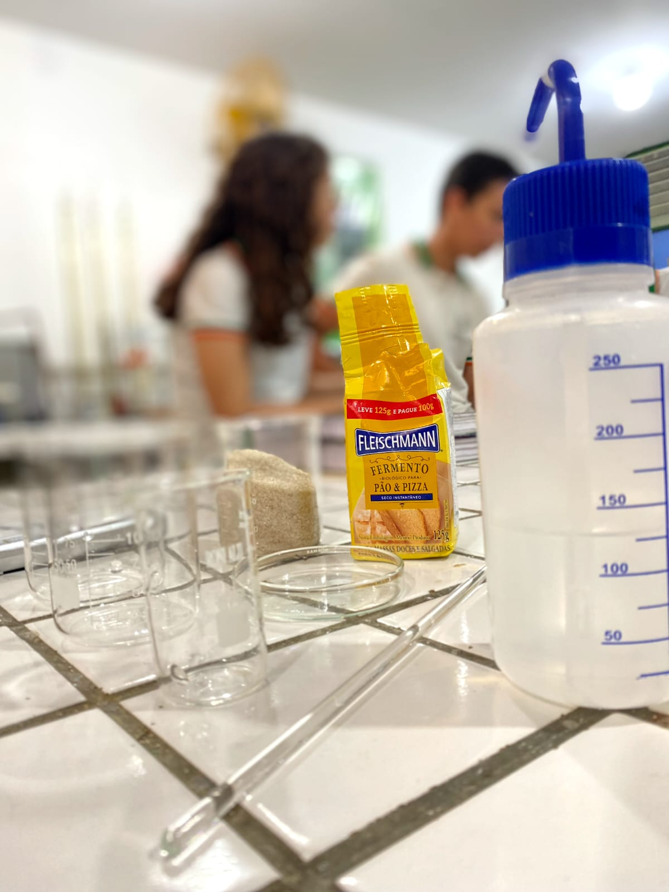
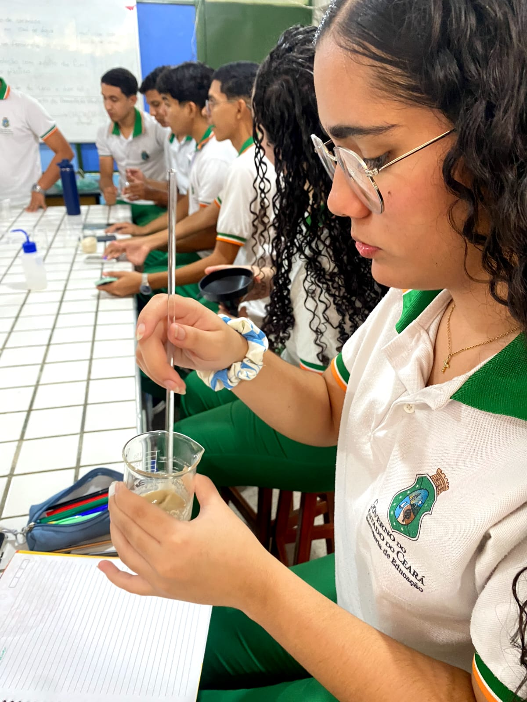
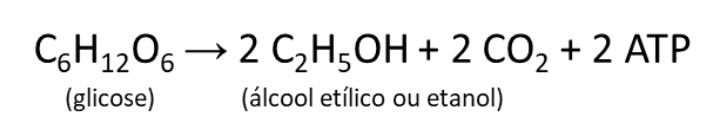
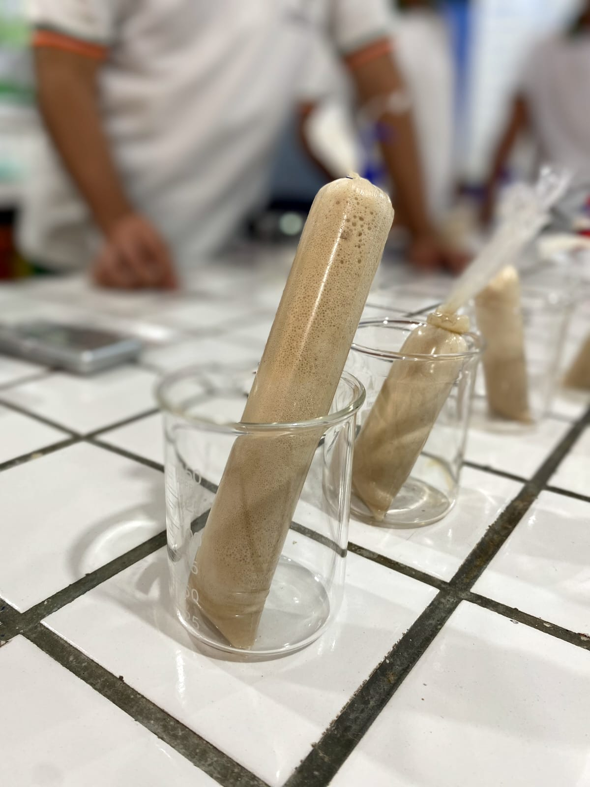

Relatório de Biologia
Fermentação Alcoólica //
Saccharomyces cerevisiae
Home
Fotos
Vídeos
Fotografia
Membros da equipe:Maria Clara, Maria Isabeli, Pedro Victor e Yago Miguel.

Materiais ulitilazdos no experimento.

Mistura dos elementos para fazer a fermentação.

Fórmula química da fermentação.

Resultado final dop experimento.